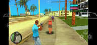
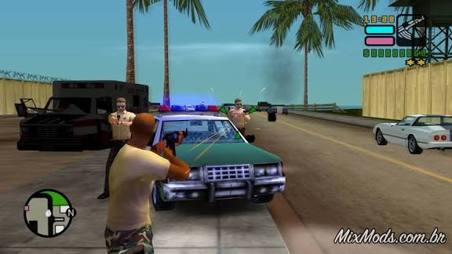

Best PSP Games for PPSSPP Emulator
Best PSP Games for PPSSPP Emulator

GTA: Vice City Stories PPSSPP – PSP (Download for Android) is one of the most popular and complete Grand Theft Auto titles on the PlayStation Portable (PSP), running perfectly on the PPSSPP emulator for Android. The game serves as a prequel to GTA: Vice City, detailing the events that lead up to the classic PS2 release.

In this title, players take on the role of Victor Vance, a soldier who finds himself pulled into the criminal underworld after a series of unexpected events. The story follows Victor's rise through the world of drug trafficking, gangs, and illegal ventures, all set in the vibrant and dangerous Vice City—inspired by 1980s Miami.

The game offers a rich and detailed open world, allowing you to explore the city freely, complete main missions, engage in side activities, drive various vehicles, use a wide arsenal of weapons, and build your own criminal empire. One of the standout features of Vice City Stories is the Empire Building system, where players can take over territories, manage illegal businesses, and defend their properties against rival gangs.
The graphics are among the best ever seen on the PSP, featuring improvements in lighting, character models, and urban environments. The soundtrack follows the series' classic style, packed with iconic songs that reinforce the 80s atmosphere. On PPSSPP – PSP, the game runs smoothly and stably, offering excellent performance on Android devices.

GTA: Vice City Stories PPSSPP is a must-have for fans of open-world, action, and crime games, offering an immersive story, vast gameplay freedom, and one of the best GTA experiences available for handhelds.
cheats code to GTA VCS